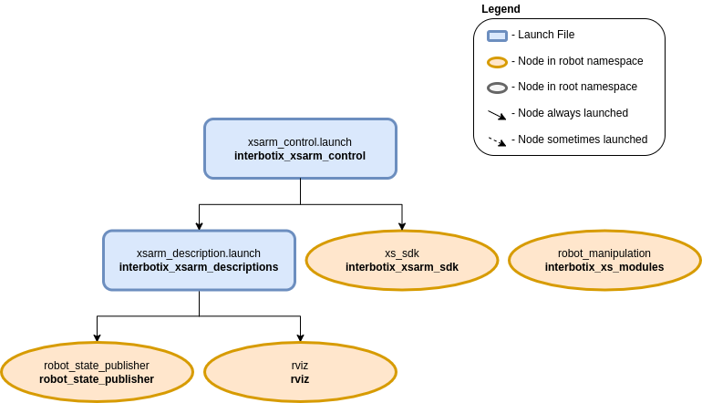

Python Demos
 View Package on GitHub
View Package on GitHub
Overview
These demos showcase various ways of using the Interbotix Python Arm Module (click the link to see the fully documented code; also check out the interbotix_xs_modules package to get a better understanding on how this and other modules can be used). Simply put, this API was created so that users with little to no ROS experience would still have the ability to control any Interbotix Arm supported by the interbotix_xs_sdk. Specifically, the API also allows a user to make an arm go to desired end-effector poses or follow Cartesian trajectories. This last feature was made possible by the Modern Robotics: Mechanics, Planning, and Control Code Library created at Northwestern University.
For the API to work, the arm joints must be set to ‘position’ control and the gripper set to ‘PWM’ control (conveniently, these are the default configs in the interbotix_xsarm_control package). Furthermore, the API assumes that all the arm-joint motors’ Drive Mode registers are set to Time-Based-Profile (this is also the default configuration). In a nutshell, this setting makes it very easy for you as the user to customize the duration and smoothness of an arm’s motion from one pose to the next.
Structure
The Python Arm module (located in the interbotix_xs_modules ROS package) builds on top of the interbotix_xs_sdk package. To get familiar with the other nodes in the graph above, look at the various packages READMEs.
- robot_manipulation - a ROS node (operating ‘behind the scenes’) that takes in commands
entered via the Python API and publishes data to various ROS topics as necessary. It is not a
classic ROS node in the sense that it can’t be launched from a ROS launch file or run from the
terminal using a
rosruncommand. Rather, the Python API module contains a Class that when instantiated, gives the node life. At the completion of a program, the object gets destroyed, killing the node.
Usage
To get started, open up a terminal and type (assuming a WidowX-250 is being launched)…
$ roslaunch interbotix_xsarm_control xsarm_control.launch robot_model:=wx250
Then, in another terminal, navigate to this directory and type…
$ python bartender.py # python3 bartender.py if using ROS Noetic
You should observe the robot pick up a virtual bottle (from behind a virtual bar), rotate so that the end-effector is facing the opposite direction, pour a virtual drink (on the virtual bar), then place the ‘bottle’ down, and go to its Sleep pose.
The other scripts work in a similar fashion, but you must make sure to change the robot name in the file to the arm you have. You might also have to adjust the commanded poses/trajectories if working with smaller arm models (like the PincherX 100) as some of them might by physically unattainable. To make things easier, each script also outlines the commands necessary to get the robot moving!
Note
If you want to test out your code first on a simulated arm, make sure to set
the use_sim arg to true like this:
$ roslaunch interbotix_xsarm_control xsarm_control.launch robot_model:=wx250 use_sim:=true